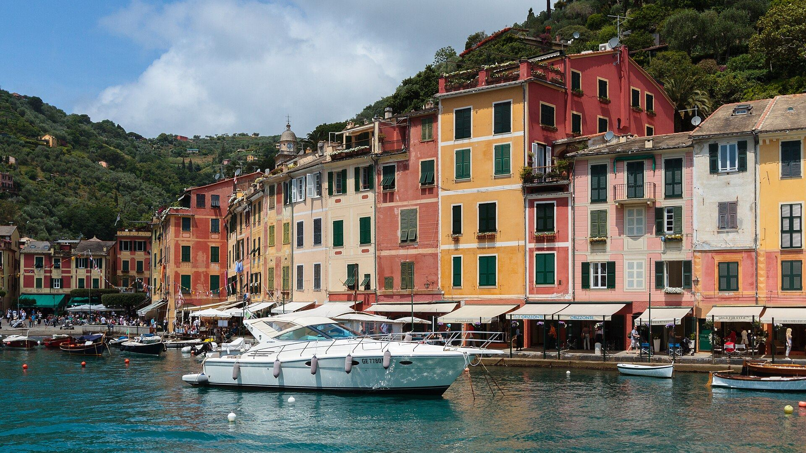

01
La vue
Une palette esthétique d'exception : véhicules de collection, céramiques artisanales, motifs méditerranéens et jeux de lumière.
Simposio conçoit des parenthèses immersives pour vos lancements, séminaires et soirées d'entreprise — inspirées de l'art de vivre italien, pensées pour marquer durablement vos invités.
Dans la Grèce antique, le symposion était ce moment où l'on suspendait les affaires du jour pour partager le vin, la parole et la beauté. Simposio en reprend l'esprit — transposé à l'élégance italienne — pour en faire une parenthèse résolument professionnelle, pensée pour vos invités d'aujourd'hui.
Suspendre le quotidien professionnel pour transporter vos invités au cœur de l'Italie iconique et intemporelle — entre la Riviera de Portofino, les falaises d'Amalfi et la douceur des collines toscanes.
Simposio orchestre des parenthèses immersives dédiées aux professionnels et aux entreprises. Lancement, événement de direction, célébration ou séminaire : nous concevons des instants hors du temps, où la convivialité devient un art et l'élégance une seconde nature.
Là où d'autres accumulent les prestataires, Simposio conçoit une œuvre globale. Scénographie signée, restauration artisanale, mixologie, univers sonore et storytelling s'unissent en une expérience parfaitement intégrée — clé en main, où chaque détail célèbre l'élégance de recevoir.

Une palette esthétique d'exception : véhicules de collection, céramiques artisanales, motifs méditerranéens et jeux de lumière.
Une gastronomie de saison, conçue avec des partenaires de qualité — de l'antipasti à la mixologie.
Une bulle délicate : fraîcheur des agrumes, du basilic, de l'expresso fraîchement moulu, de l'huile d'olive.
Une sélection musicale sur-mesure, des classiques italiens aux sonorités de la Dolce Vita.
L'élégance du geste : initiation à la mixologie, dégustations culinaires et borne photographique.
« Simposio est née de l'envie de porter l'art de recevoir à l'italienne jusqu'en Alsace — pas comme un thème, mais comme une manière de traiter chaque invité. »
Estelle Lorusso — Fondatrice de Simposio, une initiative Eurheka Conseil
Chaque prestation est pensée comme un univers à part entière — sa propre ambiance, sa propre lumière, son propre rythme — tout en portant la même exigence Simposio.

Le décor qui invite la Dolce Vita, où que vous soyez.
Une scénographie immersive complète — mobilier, éclairage, signalétique lumineuse, musique d'ambiance, et nos véhicules d'époque comme point de rendez-vous — sans changer de traiteur. Céramiques peintes à la main, guirlandes florales, comptoirs en bois brut et laiton : chaque détail compose un décor qui se vit autant qu'il se regarde.
Pour : entreprises avec cuisine interne ou traiteur déjà en place.
Demander un devisVéhicule d'illustration — modèle représentatif, pas notre véhicule habillé aux couleurs Simposio.

L'évènement, du premier regard à la dernière gorgée, signé Simposio.
Notre offre phare, clé en main : décoration, animation, gastronomie, boissons et service, en formule Standard ou Prestige. Le cœur de notre savoir-faire, pour une immersion totale dans l'univers Dolce Vita.
Pour : entreprises qui délèguent l'organisation et l'exécution de A à Z.
Demander un devis
L'afterwork où la Dolce Vita prend le relais.
Un format court et convivial, moins formel qu'un cocktail événementiel classique — guirlandes lumineuses, serviettes vichy, agrumes et herbes fraîches en centre de table, comptoir illuminé au crépuscule. Base fixe et options à la carte, avec une formule d'abonnement mensuel pour une présence régulière auprès de vos équipes.
Pour : afterworks réguliers et moments de cohésion d'équipe.
Demander un devis
Le déjeuner d'affaires où Simposio inspire un échange privilégié.
Une atmosphère soignée mais non festive, pensée pour vos rendez-vous professionnels : menu sur-mesure, vins italiens et service à table sobre et efficace, pour garder l'attention sur l'essentiel.
Pour : directions et cadres qui reçoivent clients et partenaires.
Demander un devisPhoto d'illustration — un déjeuner en terrasse en Ombrie, sans lien avec Simposio.
Simposio est une jeune agence : nous n'avons pas encore de reportage photo de nos propres événements. Voici l'univers d'inspiration — lumières, matières, lieux — qui guide chacune de nos scénographies, et que nous donnerons bientôt vie à travers vos événements.



Un premier échange pour comprendre votre contexte, vos objectifs et votre budget.
Sous 48h, une proposition détaillée adaptée à votre événement et à votre enveloppe.
Scénographie, gastronomie, ambiance sonore : nous orchestrons chaque détail de votre univers.
Une équipe dédiée sur place, du montage au démontage, pour que vous profitiez pleinement.
Un bilan et vos retours, pour affiner chaque prochaine collaboration.
Décoration, animation, ambiance, restauration et service : un interlocuteur unique pour une expérience entièrement intégrée.
Une qualité de service et de produits pensée pour les directions et grands comptes régionaux.
Une immersion réelle dans l'univers de l'art de vivre italien, pensée dans les moindres détails.
Une agence implantée en Alsace, au plus près de vos équipes et de vos lieux de réception.
Parlez-nous de votre projet — nous revenons vers vous sous 48h avec une première proposition adaptée à votre budget et à vos objectifs.